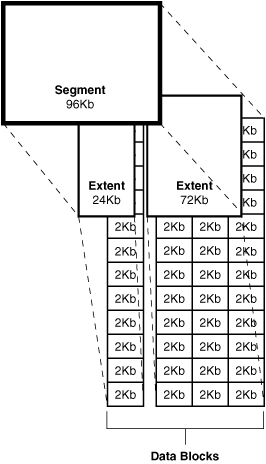

|
Телеграм группа для общения https://t.me/oracledba_net |

|
Loading
Работа над этой версией сайта остановлена. Рекомендуется обратиться к новой версии сайта oracle-dba.ru на котором в дальшейшем будут исправляться все ошибки и неточности.
Сегменты > Экстенты > Блоки

Блоки данных (Data Block)
Блоки данных (Data Block) - мельчайший строительный блок базы данных Oracle, состоящий из определенного количества байт на диске. Блок данных Oracle - логический компонент базы данных. Диски на которых располагаются блоки Oracle, сами делятся на блоки данных. Обычно блоки данных диска соответствуют блокам данных Oracle. Размер блока базы данных Oracle устанавливается параметром DB_BLOCK_SIZE в файле init.ora. Размер блока следует воспринимать, как минимальную единицу обновления, выбора или вставки данных. Общепринятый размер блока - 8 KByte. Если выбрать размер блока 64 KByte, то даже при извлечении имени длиной в четыре символа, придется прочесть весь блок размером 64 KByte, в котором содержатся интересующие четыре буквы. Все блоки данных можно разделить на две основные части: часть строк данных и часть свободного пространства.
Экстенты (extent)
Экстенты (extent) - это два или более последовательных блоков данных Oracle, представляющий собой единицу выделения места на диске. Когда комбинируется несколько непрерывных блоков данных, они называются экстентом. Когда вы создаете объект базы данных вроде таблицы или индекса, вы выделяете им некоторый начальный объем пространства, называемый начальным экстентом, и, кроме того, указываете размер следующего экстента. Однажды размещенные в таблице или индексе, экстенты остаются выделенными конкретному объекту, пока вы не удалите этот объект из базы данных - тогда пространство, занимаемое им, вернется в пул свободного пространства базы данных.
Сегменты (segments)
Сегменты (segments) - набор экстентов, которые вы выделяете логической структуре, такой как таблица или индекс (или некоторый другой объект). Набор экстентов формирует следующую более крупную единицу хранения, именуемую сегментом. Oracle называет сегментом все пространство, выделенное любому конкретному объекту базы данных. Поэтому если у вас есть таблица по имени Customer, вы просто ссылаетесь на пространство, выделенное для нее, как на "сегмент Customer". Когда вы создаете индекс, он получает свой собственный сегмент, названные его именем. Сегменты данных и индексов - наиболее распространенный тип сегментов Oracle. Есть также временные сегменты, которые база данных использует в транзакциях, включающих сортировку, а также сегменты отката, которые база использует для хранения информации отката. Когда все экстенты сегмента заполнены, Oracle автоматически выделяет дополнительные экстенты при необходимости и эти сегменты могут быть непрерывными.
SQL> desc DBA_SEGMENTS
Name Null? Type
----------------------------------------- -------- ----------------------------
OWNER VARCHAR2(30)
SEGMENT_NAME VARCHAR2(81)
PARTITION_NAME VARCHAR2(30)
SEGMENT_TYPE VARCHAR2(18)
SEGMENT_SUBTYPE VARCHAR2(10)
TABLESPACE_NAME VARCHAR2(30)
HEADER_FILE NUMBER
HEADER_BLOCK NUMBER
BYTES NUMBER
BLOCKS NUMBER
EXTENTS NUMBER
INITIAL_EXTENT NUMBER
NEXT_EXTENT NUMBER
MIN_EXTENTS NUMBER
MAX_EXTENTS NUMBER
MAX_SIZE NUMBER
RETENTION VARCHAR2(7)
MINRETENTION NUMBER
PCT_INCREASE NUMBER
FREELISTS NUMBER
FREELIST_GROUPS NUMBER
RELATIVE_FNO NUMBER
BUFFER_POOL VARCHAR2(7)
FLASH_CACHE VARCHAR2(7)
CELL_FLASH_CACHE VARCHAR2(7)
SQL> desc DBA_EXTENTS
Name Null? Type
----------------------------------------- -------- ----------------------------
OWNER VARCHAR2(30)
SEGMENT_NAME VARCHAR2(81)
PARTITION_NAME VARCHAR2(30)
SEGMENT_TYPE VARCHAR2(18)
TABLESPACE_NAME VARCHAR2(30)
EXTENT_ID NUMBER
FILE_ID NUMBER
BLOCK_ID NUMBER
BYTES NUMBER
BLOCKS NUMBER
RELATIVE_FNO NUMBER
SQL> desc DBA_FREE_SPACE
Name Null? Type
----------------------------------------- -------- ----------------------------
TABLESPACE_NAME VARCHAR2(30)
FILE_ID NUMBER
BLOCK_ID NUMBER
BYTES NUMBER
BLOCKS NUMBER
RELATIVE_FNO NUMBER
Displaying Segment Information
SELECT SEGMENT_NAME, TABLESPACE_NAME, BYTES, BLOCKS, EXTENTS
FROM DBA_SEGMENTS
WHERE SEGMENT_TYPE = 'INDEX'
AND OWNER='HR'
ORDER BY SEGMENT_NAME;
Displaying Extent Information
SELECT SEGMENT_NAME, SEGMENT_TYPE, TABLESPACE_NAME, EXTENT_ID, BYTES, BLOCKS
FROM DBA_EXTENTS
WHERE SEGMENT_TYPE = 'INDEX'
AND OWNER='HR'
ORDER BY SEGMENT_NAME;
Displaying the Free Space (Extents) in a Tablespace
SELECT TABLESPACE_NAME, FILE_ID, BYTES, BLOCKS
FROM DBA_FREE_SPACE
WHERE TABLESPACE_NAME='SMUNDO';
SELECT segment_name, file_id, block_id
FROM dba_extents
WHERE owner = 'SCOTT'
AND segment_name LIKE 'DEPT%';
SQL> select distinct bytes/blocks from user_segments;
BYTES/BLOCKS
------------
8192
SQL> create tablespace myts1 datafile '/u02/oradata/ora112/myts1_1.dbf' size 512k extent management local;
SQL> create table myt1 (x int) storage(initial 256k next 256k) tablespace myts1;
SQL> select extent_id, bytes, blocks from dba_extents where segment_name = 'MYT1';
EXTENT_ID BYTES BLOCKS
---------- ---------- ----------
0 65536 8
1 65536 8
2 65536 8
3 65536 8
// выделить экстент
SQL> alter table myt1 allocate extent;
Table altered.
SQL> alter table myt1 allocate extent;
Table altered.
SQL> alter table myt1 allocate extent;
Table altered.
SQL> alter table myt1 allocate extent;
alter table myt1 allocate extent
*
ERROR at line 1:
ORA-01653: unable to extend table SYSTEM.MYT1 by 8 in tablespace MYTS1
SQL>
EXTENT_ID BYTES BLOCKS
---------- ---------- ----------
0 65536 8
1 65536 8
2 65536 8
3 65536 8
4 65536 8
5 65536 8
6 65536 8
7 rows selected.
7 extenst * 8 blocks * block_size (8K) = 448 K
And datafile is 512k
Logically there should be 512k - 448k = 64K free space
SQL> select extents from dba_segments where segment_name = 'MYT1';
EXTENTS
----------
7
SQL> select blocks from dba_extents where segment_name = 'MYT1';
BLOCKS
----------
8
8
8
8
8
8
8
7 rows selected.